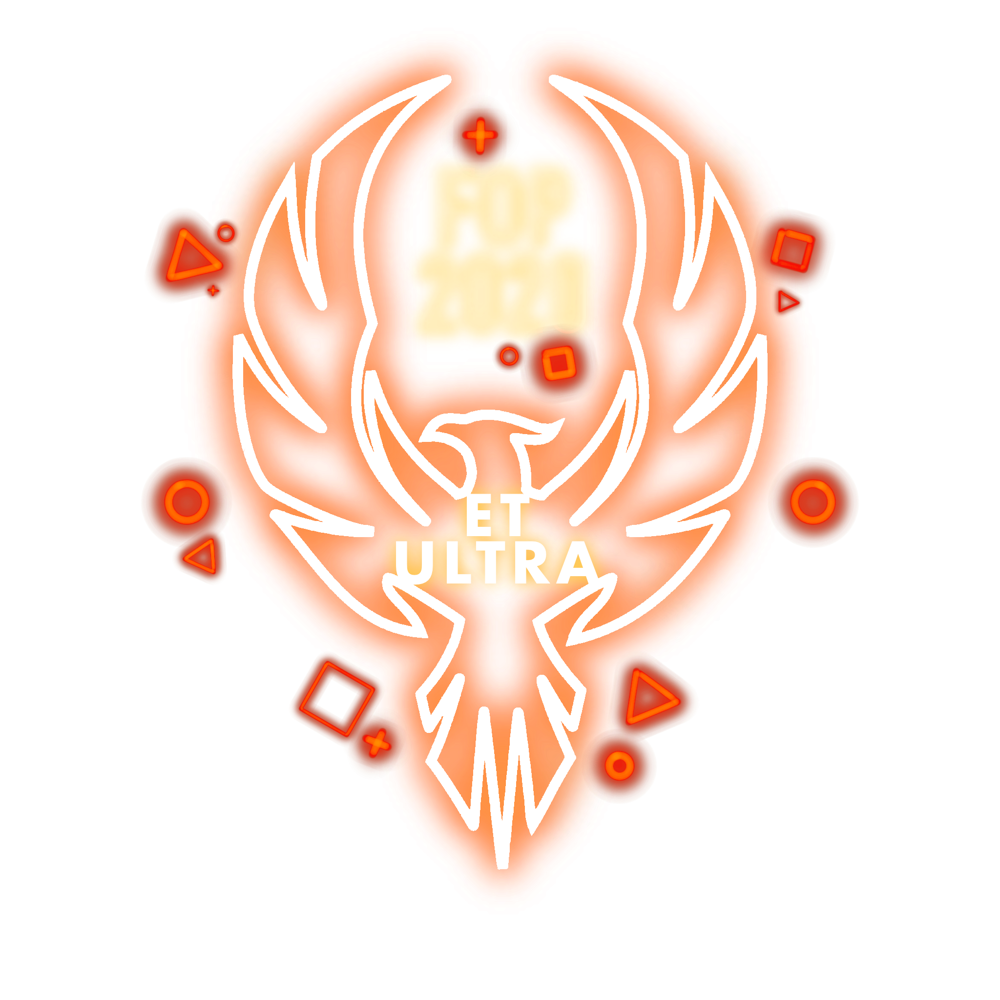

School of Computing FOP 2020
Excited to start university life at the School of Computing?
Or do you simply want to make some friends and have fun?
SIGN UP HERE
NUS Computing Freshmen Orientation Projects (FOP) 2020 presents: ET ULTRA.

With an exciting lineup of activities during E-FOP, we will help
you integrate into our Computing family in no time. At E-FOP,
not only do you get the opportunity to meet other incoming freshmen,
you will also meet seniors who can provide valuable advice to
follow you through your University years. Join us this summer
for the best freshmen experience you’ll ever have!
Timeline of events
-
12 - 15 June
Freshmen Social Campcancelled -
19 June
RAG Commencementcancelled
-
(TBC) JulyE-FOP
-
17 - 20 July
Freshmen Orientation Weekcancelled
-
8 August
NUSSU Rag & Flag Daycancelled -
21 August
BASH: Geek on Fleekcancelled
E-FOP
E-FOP serves as a platform for freshmen to connect with the SoC community virtually, at the comfort of their home!
Freshmen Social Camp
FSC is where it all begins! The kickstarter of FOP leads
the way with exciting and fun-filled activites.
Freshmen Orientation Week
The last FOP camp, FOW aims to forge strong bonds
between freshmen and familiarise them with SoC!
RAG
RAG is an annual performance put up by individual
faculties and halls to thank our sponsors for their
generosity towards our beneficiaries.
BASH: Geek on Fleek
Geek on Fleek is the perfect curtain closer for FOP,
centred around celebrating each individual's character
and confidence!
Academic Day
Acad Day is a must-go to learn about the tips & tricks that will support your life as a Computing student!